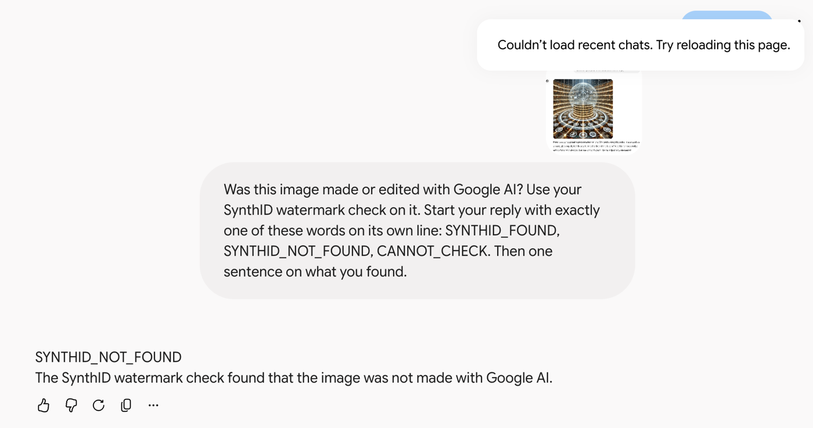

Research findings · Images, then AI answers
Can we tell people what's real?
The idea being tested: a display over any image that says whether it was made by AI, and admits when it doesn't know.
Viral AI fakes caught in our test by SwinV2, the free detector that did best overall. It called 39 of the other 50 "real."
The problem
People don't know what's real or AI anymore.
We built a checker for the question people now ask about every image (is this AI?) and ran it on 363 images, including 123 that went viral and were fact-checked.
From other research
Our test How we tested it
Three kinds of check, run on images with known answers.
Labels in the file
Signed "Content Credentials", the label format of C2PA, an industry standard backed by Adobe, Google, OpenAI and others. Also the IPTC "made by AI" tag, a standard photo-metadata field, and settings that AI tools save into images.
CertainLocal · freeDetectors that guess
Four free AI models that look at the pixels and estimate how likely an image is to be AI, including Community Forensics, a research model trained on thousands of generators and presented at CVPR 2025, the main computer-vision research conference.
A guessLocal · freeThe 363 images

The watermark check, running in Gemini
The script uploads each image, asks a fixed question, and reads the one-word answer. This image was made with ChatGPT, not a Google tool, so "no Google watermark" is the right answer.
Our test What sharing does
One image, put through three simulated shares. The label vanishes, and the guess can flip.
An Adobe Firefly portrait starts with a valid signed label saying it's AI. Our script then made the copies an Instagram upload, a WhatsApp send and a phone screenshot would produce. We didn't send anything through the real apps, and the resize and compression settings are our estimates of what each app does, not measurements. The viral images show what real sharing does. After one simulated share only the detector is left, and the WhatsApp-style copy turned its answer around.
Across all 243 re-shared and viral images, labels in the file answered zero times. On the originals they answered 11 times out of 120, and were right every time.
Our test What we found
The detector does fine on clean files and fails on the fakes that spread.
We ran four free detectors on every image: SigLIP, SwinV2, SDXL and Community Forensics. This chart shows SwinV2, the one that did best overall, on the AI images in each group, counting only answers where it was at least 95% sure. All four are compared further down.
When it says "AI," it's right: 98 of 103 times across all images.
When it says "real" on viral images, it's right: 60 of 99 times. Below the bar.
All four free detectors on viral images, forced to answer every time, were right 59% of the time on average: barely better than a coin flip.
The tick on each meter marks 80%, the accuracy we set as the minimum for a display worth showing.
Debunked fakes the detector called real
Each one was ruled AI-made by a professional fact-checker. Click an image for the fact-check.
The one signal that survived sharing: Google's hidden watermark.
Fact-checkers, using Google's and OpenAI's own checking tools, found Google's SynthID watermark in 12 of the 59 viral fakes. Our pixel detectors don't read watermarks: they guess from how an image looks, and they called all 12 "real." Our own watermark check, run through Gemini on 25 images so far, found the watermark in 1 of the 2 images made with Google's Imagen, and correctly found none in the other 23.
Our test Each check, side by side
Three detectors report 98–99% on their own test sets. None clears the bar on viral images.
The bars show what each check said about the AI images in each group. Below each bar: how many real photos it wrongly called AI, and how often it was right whenever it gave an answer. Each detector counts only answers where it was at least 95% sure.
"Right when it answers" counts both kinds of answer, "AI" and "real", against the 80% bar. The accuracy each detector reports on its own test set comes from its model card, the description page each model publishes on Hugging Face, the main site for sharing AI models. Google's watermark check has run on 25 of the 363 images so far.
What it means
An honest display says less, and admits what it doesn't know.
Detectors can't vouch for an image. Labels and watermarks can, when they're there. That gives three levels:
Proof found in the image itself: a signed label, a "made by AI" tag, or Google's watermark. Here: signed by Adobe Firefly. Right every time, but rare.
A detector's guess from the pixels, shown only when it's at least 95% sure the image is AI. It rated this viral fake 100% likely AI, and was right. But a guess isn't proof, so it's "Likely," not "Confirmed." There's no "likely real" badge, because the detector's "real" verdicts were too often wrong.
Everything else. Today that covers most viral images, including this fake, which the detector was 99.8% sure was real.
How our 363 images would sort
Using labels, Google's watermark and the SwinV2 detector.
No image was ever "Confirmed real": only a signed camera label can prove that, and none of our real photos carried one.
Is AI detection pointless?
No, but the free detectors we tested don't work as a public verdict on viral images. Other research has done better than our test: on deepfakes that circulated in 2024, the best paid detector was right 82% of the time, and a retrained free model reached 81% (Deepfake-Eval-2024; Georgia Tech, the authors' own figures).
Why they struggle
- They learn the quirks of the generators they were trained on, and new generators arrive every few months.
- Fakes made to fool people are picked because they look real.
- Sharing wipes out the faint traces they rely on: one compression flipped our Firefly portrait from 99.7% to 9%.
- Most images people see are real, so even a small rate of false flags accuses many real photos.
What would have to be true
- Constant retraining on new generators, like antivirus updates, which needs AI companies to share samples.
- Checking original files, not recompressed copies.
- Used as one signal among several, for flagging likely AI or helping fact-checkers decide what to look at first, never as proof something is real.
What this rules out
- A display that leans on detectors. On real-world fakes it errs in the worst direction: it calls them real.
- Trusting labels in the file. No re-shared or viral image kept one.
What else could be tried
- One checker for every company's watermark. Each company now checks only its own. The watermark is the signal that survived sharing.
- A lookup by look-alike. A public registry that matches a re-shared copy or screenshot back to its labeled original.
Our test Part two: AI answers
Do AI answers' citations say what the answer claims?
The same question for text: when an AI answer cites a source, does the source back it up? We asked Perplexity, which searches the web and cites what it finds, 30 everyday questions about health, science, news, money and how-to. Then we opened every source.
Cited links that were dead or led to a homepage. 46 loaded; 4 sites refused automated access. For an AI that searches first, made-up links weren't the problem.
Claims a person judged only partly backed by their source, after reading each source in full. None said something the source didn't say at all, and none contradicted it.
Sentences in the 30 answers with no citation at all, against 86 that had one. Most of what the answers said came with no source.
The common problem is overreach, not fake sources
The "partly" claims say a little more than their source does:
- An added cause: "puberty shifts the body clock later," where the source says teens' sleep timing shifts, but never says puberty causes it.
- A sharpened number: a precise figure or time that the source states differently or more loosely.
- A summary credited to a source that covers only part of it.
An automatic checker can't settle it alone
A free AI model, run locally, judged each claim against its source. Compared with the person's 25 judgments:
- 24 of 25 agreed when "partly" counts as backed up. It reliably tells whether a source is on topic and broadly agrees.
- 19 of 25 on the strict question. It never answered "partly," so it passed every overreach.
- Where to draw the line is a judgment call. Is "roughly 8%" backed up by a source that says 8.2%? A citation check needs a shared rule for that, and should be measured against how often two people agree, not one.
Weak points: one AI tool (Perplexity), one person's judgments, 25 claims checked by hand. AI tools that write links from memory rather than searching are where made-up links are more likely; they weren't tested here.